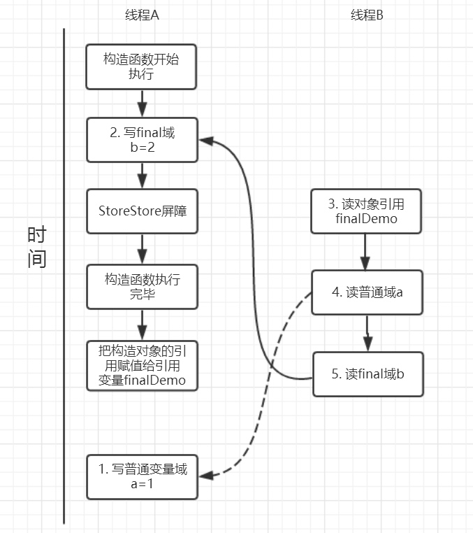
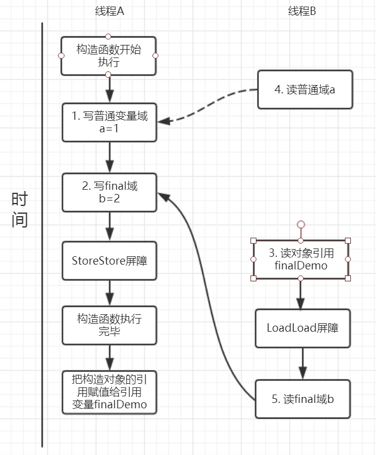

当某个类的整体定义为final时，就表明了你不能打算继承该类，而且也不允许别人这么做。即这个类是不能有子类的。
final 引用不能从构造函数内逃逸
final 问题
- 所有的final修饰的字段都是编译期常量吗?
- 如何理解private所修饰的方法是隐式的final?
- 说说final类型的类如何拓展?
- 比如String是final类型，我们想写个MyString复用所有String中方法，同时增加一个新的toMyString()的方法，应该如何做?
- final方法可以被重载吗? 可以
- 父类的final方法能不能够被子类重写? 不可以
- 说说final域重排序规则?
- 说说final的原理?
- 使用 final 的限制条件和局限性?
final 的两个重排序规则
对应 final 域，编译器和处理器需要遵守两个重排序规则。
- 写 final 域的重排序规则可以确保在对象引用为任意线程可见之前， 对象的 final 域已经被正常的初始化了，而普通域不具有这样的保证。

由于a,b之间没有数据依赖性，普通域(普通变量)a 可能会被重排序到构造函数之外，线程B就有可能读到的是普通变量a初始化之前的值(零值)，这样就可能出现错误。而final域变量b，根据重排序规则，会禁止final修饰的变量b重排序到构造函数之外，从而b能够正确赋值，线程B就能够读到final变量初始化后的值。
- 读 final 域的重排序规则可以确保在读一个对象的 final 域之前，一定会先读包含这个 final 域的对象的引用。

读对象的普通域被重排序到了读对象引用的前面就会出现线程B还未读到对象引用就在读取该对象的普通域变量，这显然是错误的操作。而final域的读操作就“限定”了在读final域变量前已经读到了该对象的引用，从而就可以避免这种情况。
final 实现原理
通过上面的重排序规则会要求编译器在final域的写之后，构造函数return之前插入一个StoreStore
障屏。
读 final 域的重排序规则要求编译器在读 final 域的操作前面插入一个
LoadLoad 屏障